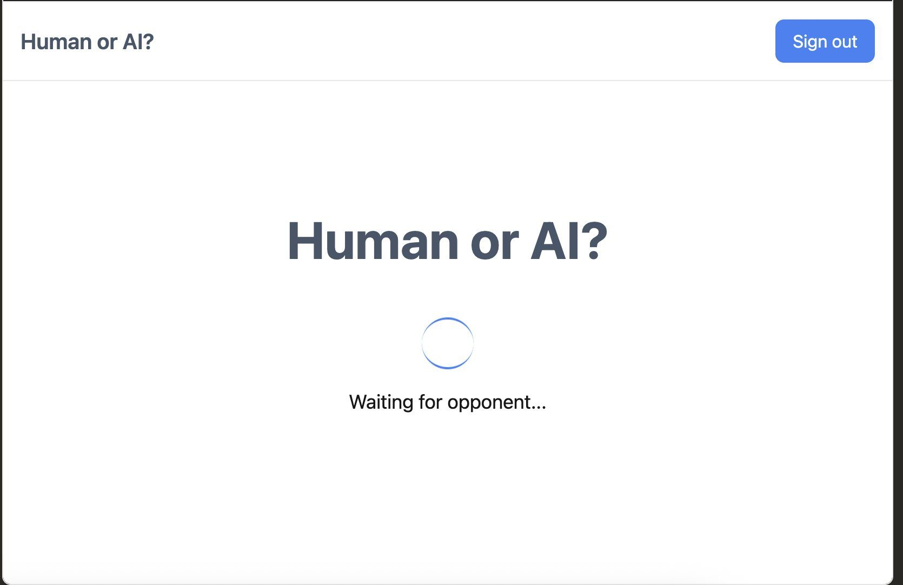

Are you talking to a Human or a Robot?
Originally published on LinkedIn
Are you talking to a Human or a Robot?
https://lnkd.in/dswZFZdd
I took the Vibe Coding editor "Chef" by Convex for a run to see if it can build such a game from a single prompt (all other editors ie. Lovable/Bolt/Base44/etc failed to, so it became my new benchmark to test such tools)
